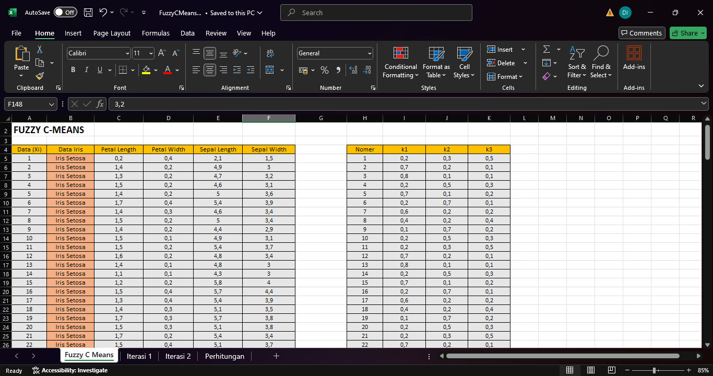

Fuzzy C-Means
Pengertian :
adalah salah satu teknik pengelompokan yang termasuk dalam kelompok metode Hard K-Means, FCM menggunakan pendekatan pengelompokan fuzzy, memungkinkan data menjadi anggota dari seluruh kelas atau cluster yang terbentuk dengan derajat keanggotaan berkisar antara 0 hingga 1, Tingkat keanggotaan ini menentukan sejauh mana data hadir dalam suatu kelas atau cluster
Tujuan :
Mengelompokkan data ke dalam beberapa cluster dengan derajat keanggotaan, bukan klasifikasi mutlak atau (soft clustering)
Kelebihan dan Kekurangan :
Kelebihan :
Data bisa menjadi anggota beberapa cluster sekaligus (Soft Clustering), hasil stabil jika inisialisasi bagus
Kekurangan :
Sensitif terhadap Outlier, harus menentukan Cluster dari awal, dipengaruhi oleh skala dan dimensi data
Langkah Langkah Pengerjaan
1. Siapkan Database

2. Tentukan Clusternya
disini saya pakai K3
3. Masukkan nilai uik (k) dan xij (data iris)
4. Hitung uik^2
disini saya pakai K3
5. Hitung uik*xij
kemudian hitung k dikali dengan keseluruhan data
6. Hitung Total perhitungan uik^2 & uik*xij
proses ini bisa disebut juga sebagai sigma
6. Hitung Total perhitungan uik^2 & uik*xij
proses ini bisa disebut juga sebagai sigma
7. Tentukan Centroid Baru
caranya adalah total dari data xij dibagi dengan total dari uik
8. Hitung Fungsi Objektif
caranya adalah data (xij-centroid baru)^2, hitung semua data hingga k3 lalu total semua hasil perhitungan
9. Hitung Fungsi Objektif Lanjutan
caranya adalah (xij-vik)^2 dan uik(w) lalu kalikan keduanya dan totalkan seluruh data
10. Tahap Akhir Hitung Fungsi Objektif
caranya adalah jumlahkan semua data dari hasil perkalian (xij-vik)^2 dan uik(w)
11. Hitung ui setiap data pada setiap k
caranya adalah hitung (xij-centroid baru)^2 pada semua data
12. Jumlahkan semua hasil perhitungan ui
13. Hitung ui1 ui2 dan ui3
caranya adalah total hitung FO dibagi total hitunng ui setiap data
14. Tentukan nilai K1, K2 dan K3
didapat dari total perhitungan pada ui1 ui2 dan ui3